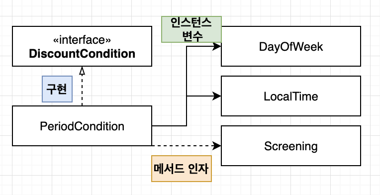
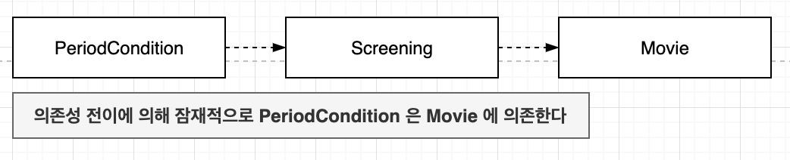
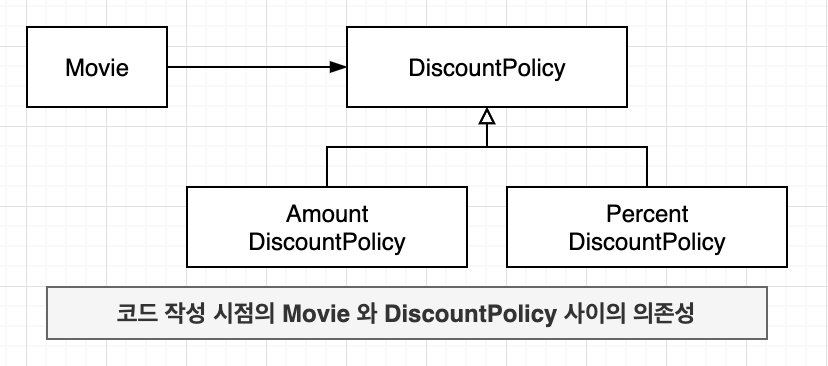
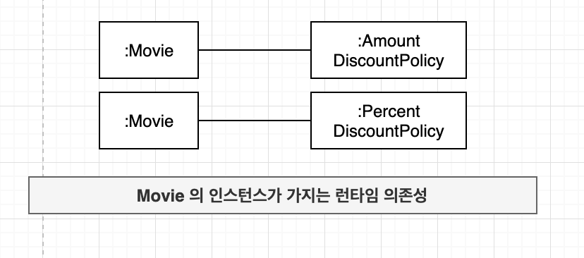
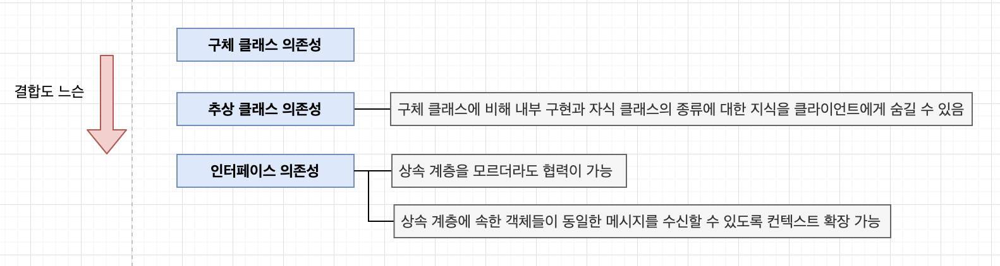

“OBJECTS 8장”
잘 설계된 객체지향 애플리케이션은 작고 응집도 높은 객체 들로 구성된다. 또한 이런 작은 객체들이 단독으로 수행할 수 있는 작업은 없기 때문에 다른 객체에게 도움을 요청해야 한다. 이런 요청들이 객체 사이의 협력을 낳는다.
협력은 객체가 다른 객체에 대해 알 것을 강요하고 이런 지식들이 객체 사이의 의존성을 낳는다.
과도한 의존성은 애플리케이션의 수정을 어렵게 만들고, 객체지향 설계의 핵심은 협력을 위한 필요한 의존성은 유지하면서도 변경을 방해하는 의존성은 제거하는데 있다.
이런 관점에서 객체지향 설계란 의존성을 관리하는 것이고 객체가 변화를 받아들일 수 있게 의존성을 정리하는 기술이라고 할 수 있다.
의존성 이해하기
변경과 의존성
- 협력을 위해 다른 객체를 필요로 할때 두 객체 사이에 의존성이 존재 하게 됨
실행 시점 : 의존하는 객체가 정상적으로 동작하기 위해서는 실행 시에 의존 대상 객체가 반드시 존재해야 한다.
구현 시점 : 의존 대상 객체가 변경될경우 의존하는 객체도 함께 변경된다.
- 어떤 객체가 예정된 작업을 정상적으로 수행하기 위해 다른 객체를 필요로 하는 경우 두 객체 사이에 의존성이 존재한다고 말함
- 의존성은 방향성을 가짐 -> 항상 단방향
- 두 요소 사이의 의존성은 의존되는 요소가 변경될 때 의존하는 요소도 함께 변경될 수 있다는 것을 의미
- 변경에 의한 영향의 전파 가능성 암시
1 | public class PeriodCondition implements DiscountCondition { |

- PreiodCondition 은 자신이 의존하는 대상이 변경 될 때 함께 변경될 수 있음
의존성 전이
- 의존성은 전이될 수 있음
- 의존성 전이
- PreiodCondition -> Screening -> Movie, LocalDatetime, Customer

- 의존성은 함께 변경될 가능성을 의미하기 때문에 모든 경우 의존성 전이가 일어나는 것은 아님
- 전이 여부는 변경의 방향과 캡슐화의 정도에 따라 달라짐
- 직접 의존성
- 요소가 다른 요소에 직접 의존하는 경우
- PreiodCondition -> Screening
- 코드에 명시적으로 드러남
- 간접 의존성
- 직접적인 관계는 존재하지 않음
- 의존성 전이에 의해 영향이 전파되는 경우
- PreiodCondition 의 코드 안에 명시적으로 드러나지 않음
의존성이란 의존하고 있는 대상의 변경에 영향을 받을 수 있는 가능성이다.
런타임 의존성과 컴파일 타임 의존성
- 런타임 의존성
- 애플리케이션이 실행되는 시점
- 객체 사이의 의존성
- 컴파일 타임 의존성
- 작성된 코드를 컴파일 하는 시점
- 코드 그 자체
- 시간이 아니라 작성한 코드의 구조를 중요함
- 클래스 사이의 의존성
런타임 의존성과 컴파일 타임 의존성이 다를 수 있다는 것이다. 사실 유연하고 재사용 가능한 코드를 설계하기 위해서는 두 종류의 의존성을 서로 다르게 만들어야 한다.


- 두 클래스 모두를 포괄하는 DiscountPolicy 추상클래스에 의존하도록 만들어야함
- 컴파일 타임 의존성을 실행 시에 PercentDiscountPolicy 인스턴스나 AmountDiscountPolicy 인스턴스에 대한 의존성으로 대체해야함
코드 작성 시점의 Movie 클래스는 할인 정책을 구현한 두 클래스의 존재를 모르지만 실행 시점의 Movie 객체는 두 클래스의 인스턴스와 협력할 수 있게 된다. 이것이 핵심이다. 유연하고 재사용 가능한 설계를 창조하기 위해서는 동일한 소스코드 구조를 가지고 다양한 실행 구조를 만들 수 있어야 한다.
- 협력할 인스턴스의 구체적인 클래스를 알아서는 안됨
- 협력할 객체는 런타임에 해결
컴파일 타임 구조와 런타임 구조 사이의 거리가 멀면 멀수록 설계가 유연해지고 재사용이 가능해진다.
컨텍스트 독립성
- 구체적인 클래스를 알면 알수록 특정한 문맥에 강하게 결합
- 클래스가 특정한 문맥에 강하게 결합될수록 다른 문맥에서 사용하기는 더 어려워짐
- 컨텍스트 독립성
- 클래스가 사용될 특정한 문맥에 대해 최소한의 가정만 이루어져 있다면 다른 문맥에서의 재사용이 수월해짐
- 각 객체가 해당 객체를 실행하는 시스템에 관해 알지 못해야함
- 자신이 실행될 컨텍스트에 대해 구체적인 정보를 최대한 적게 알아야함
의존성 해결하기
컴파일 의존성은 구체적인 런타임 의존성으로 대체되어야 함
의존성 해결
컴파일 타임 의존성을 실행 컨텍스트에 맞는 적절한 런타임 의존성으로 교체하는 것
객체를 생성하는 시점에 생성자를 통해 의존성 해결
객체 생성 후 setter 메서드를 통해 의존성 해결
객체 생성 후 의존하고 있는 대상 변경시 유용
설계를 유연하게 만들수 있음
- 객체를 생성하고 의존 대상을 설정하기 전까지 객체의 상태가 불완전해 질 수 있음
- NullPointerException 예외 발생 가능성
1
2
3Movie avatar = new Movie(...);
avatar.calculateFee(...); // NullPointerException 발생
avatar.setDiscountPolicy(new AmountDiscountPolicy(....));
- 메서드 실행 시 인자를 이용해 의존성 해결
- 협력 대상에 대해 지속적으로 의존 관계를 맺을 필요 없음
- 메서드가 실행되는 동안만 일시적으로 의존 관계가 존재
- 메서드가 실행될 때마다 의존 대상이 달라져야 하는 경우에 유용
생성자 방식 + setter 방식 = 시스템 안정적으로 유지하면서도 유연성 향상
1
2
3
4Movie avatar = new Movie(..., new PercentDiscountPolicy(...));
avatar.calculateFee(...);
...
avatar.setDiscountPolicy(new AmountDiscountPolicy(....));
유연한 설계
의존성과 결합도
- 객체지향 패러다임의 근간 = 협력
- 의존성의 존재가 아니라 의존성의 정도가 문제
1 | class Movie { |
- 바람직하지 못한 의존성이 문제
- 바람직한 의존성은 재사용성과 관련
- 바람직하지 않은 의존성 : 다른 환경에서 재사용 하기 위해 내부 구현을 변경하게 만드는 모든 의존성
- 바람직한 의존성 : 컨텍스트에 독립적인 의존성 / 다양한 환경에서 재사용될 가능성 Up
- 의존성
- 두 요소 사이의 관계 유무
- 의존성이 존재한다 / 의존성이 존재하지 않는다
- 결합도
- 두 요소 사이에 존재하는 의존성의 정도
- 결합도가 강하다 / 결합도가 느슨하다
지식이 결합을 낳는다
- 한 요소가 다른 요소에 대해 더 많은 정보를 알고있음 -> 강하게 결합
- 더 적은 정보를 알고 있음 -> 약하게 결합
더 많이 알수록 더 많이 결합된다.
추상화에 의존하라
- 추상화
- 어떤 양상, 세부사항, 구조를 좀더 명확하게 이해하기 위해 특정 절차나 물체를 의도적으로 생략하거나 감춤으로써 복잡도를 극복하는 방법

- 실행 컨텍스트에 대해 알아야 하는 정보를 줄일수록 결합도가 낮아짐
- 더 추상적일 수록 결합도는 더 낮아짐
명시적인 의존성
1 | class Movie { |
- 클래스 안에서 구체 클래스에 대한 모든 의존성 제거
1 | class Movie { |
- 명시적 의존성
- 의존성이 명시적으로 퍼블릭 인터페이스에 노출
- 숨겨진 의존성
- 의존성이 퍼블릭 인터페이스에 표현되지 않음
- 의존성이 명시적이지 않으면
- 의존성 파악을 위해 내부 구현을 직접 살펴봐야 함
- 클래스를 다른 컨텍스트에서 재사용하기 위해 내부 구현을 직접 변경해야 함
의존성은 명시적으로 표현돼야 한다. 의존성을 구현 내부에 숨겨두지 마라.
유연하고 재사용이 가능한 설계란 퍼블릭 인터페이스를 통해 의존성을 명시적으로 드러나는 설계다.
명시적인 의존성을 사용해야만 퍼블릭인터페이스를 통해 컴파일 타임 의존성을 적절한 런타임 의존성으로 교체할 수 있다.
경계해야 할 것은 의존성 자체가 아니라 의존성을 감추는 것이다.
숨겨져 있는 의존성을 밝은 곳으로 드러내서 널리 알려라.
그렇게 하면 설계가 유연하고 재사용 가능해 질 것이다.
new 는 해롭다
1 | class Movie { |
- new 는 결합도를 높이기 때문에 해로움
- 해결방법은 인스턴스를 생성하는 로직과 생성된 인스턴스를 사용하는 로직을 분리하는 것
1 | class Movie { |
- 사용과 생성의 책임을 분리
- 의존성을 생성자에 명시적으로 드러냄
- 구체 클래스가 아닌 추상클래스에 의존
= 설계를 유연하게 만듬
가끔은 생성해도 무방하다
- 주로 협력하는 기본 객체를 설정하고 싶은 경우
1 | class Movie { |
표준 클래스에 대한 의존은 해롭지 않다
- 변경될 확률이 거의 없는 클래스라면 의존성은 문제되지 않음
- 자바 JDK에 포함된 표준 클래스
1 | abstract class DiscountPolicy { |
- 의존성의 영향이 적은 경우에도 추상화에 의존하고 명시적으로 드러내는 것은 좋은 설계 습관
컨텍스트 확장하기
1 | class OverlappedDiscountPolicy extends DiscountPolicy{ |
단지 원하는 기능을 구현한 DiscountPolicy 자식 클래스를 추가하고 클래스의 인스턴스를 Movie 에 전달하기만 하면 된다.
조합 가능한 행동
- 유연하고 재사용 가능한 설계는
- 객체들의 조합을 통해 무엇을 하는지를 표현하는 클래스들로 구성
- 작은 객체들의 행동을 조합함으로써 새로운 행동을 끌어낼 수 있는 설계
- 객체들의 조합을 선언적으로 표현함으로써 객체들이 무엇을 하는지를 표현하는 설계
- 핵심은 의존성을 관리하는 것